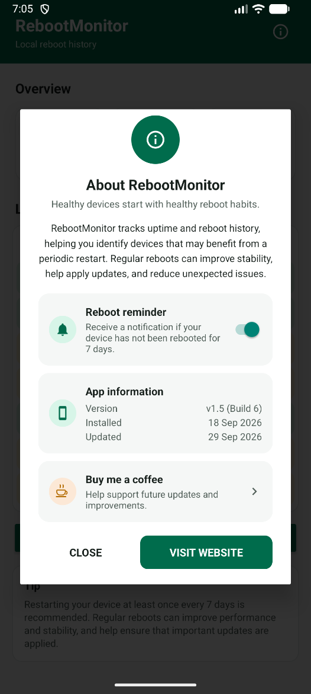

The shared device problem
In healthcare, education, logistics and field service, one device is often shared by a whole team.
A nurse on the day shift uses it in the morning and a colleague on the evening shift picks it up later. Nobody feels responsible for the device, so nobody thinks of restarting it. Weeks or even months without a reboot are the norm rather than the exception.
This page explains how shared devices are set up with Microsoft Intune and Managed Home Screen, why a missing reboot causes problems, and how RebootMonitor closes that gap.
Intune and Managed Home Screen
Intune enrolls a shared device as an Android Enterprise dedicated device. Managed Home Screen decides what the user sees on it.
Managed Home Screen (MHS) is a Microsoft launcher that replaces the standard home screen. Users only see the apps the administrator has approved and cannot change device settings. A shared device stays predictable, no matter who is holding it.
MHS can also require a Microsoft Entra ID sign-in per session and sign users out automatically after inactivity. That makes the device suitable for changing users. It also makes the device feel like it belongs to no one.
Why a reboot matters
A device that runs for weeks falls behind on updates and gets slower and less reliable.
Pending updates
Android system updates and many security patches only take effect after a restart. The device can report as compliant while still running old code.
Memory & performance
Background processes pile up over time. Apps slow down or crash, and the battery drains faster.
Policies & apps
New Intune profiles, app updates and MHS configuration are sometimes only fully applied after a restart.
Helpdesk tickets
Many "the device is acting strange" reports disappear after a reboot. Without one, they end up at the service desk.
No owner
An owner notices and restarts a personal device. On a shared device, everyone passes the problem to the next user.
The solution: RebootMonitor
RebootMonitor records every reboot locally and reminds the user once the device has gone without a restart for too long — 7 days by default, adjustable to 3 or 14 days, or off.
The app speaks to the person holding the device right now. They can see the device's status at a glance and get a clear reason to restart it.



How it gets users to reboot
- After the chosen interval without a reboot (7 days by default, or 3 or 14 days), a notification appears and the app icon gets a badge.
- Opening the app shows a pop-up that recommends restarting the device.
- The reminder clears itself after the next reboot. It stays silent for the first reminder period after installation, and can be turned off entirely.
- If a reminder doesn't arrive as expected on a particular device, a built-in shortcut jumps straight to its battery optimization settings.
Private and simple
- All data stays on the device in a local database. Nothing is sent anywhere.
- Only two permissions:
RECEIVE_BOOT_COMPLETEDandPOST_NOTIFICATIONS. - History older than 12 months is cleaned up automatically. The app follows the device language, in 10 languages.
Deploying with Intune
Deploy RebootMonitor like any other Managed Google Play app. The one extra step is adding its icon to Managed Home Screen.
Add the app
In the Intune admin center, go to Apps › Android › Add › Managed Google Play app and approve RebootMonitor. Package name:
app.rebootmonitor.mobile.Assign it
Assign the app as Required to the device group that holds the shared devices.
Add it to MHS
Add the app to the allowed apps in the dedicated device profile (multi-app kiosk) or the MHS app configuration policy.
Allow notifications
Keep the notification bar available in MHS, so users actually see the reminder.
Verify
Open the app on a test device, check the uptime and reboot once. The reboot should appear in the overview right away.
Check battery optimization if needed
Most devices deliver the reminder fine on default battery settings. If a reminder doesn't show up on a particular device, users can check the shortcut in the app's settings, or, on Samsung devices, an admin can manage that setting fleet-wide through Intune using the Samsung Knox Service Plugin (OEMConfig) instead of relying on each device.
Without step 3 the app is installed but invisible. Reminders only start after the chosen interval (7 days by default) has passed since installation, so don't expect notifications right after the rollout.
Tips for a lasting reboot habit
Technology alone won't do it. RebootMonitor works best when the organization supports the habit too.
Put it up front
Give the icon a fixed, visible spot in the MHS grid, so the badge stands out.
Make it routine
Tie the reboot to a fixed moment, such as a shift change or the end of the week.
Keep it short
A sticker on the charger saying "Restart this device at least once a week" beats a long manual.
Combine with management
Use uptime data in Intune to find devices that never restart, and follow up with that team.
Frequently asked questions
Why do shared Android devices rarely get restarted?
Shared devices are used by changing people who do not feel responsible for the device. Managed Home Screen sign-in and automatic sign-out make it feel even less like anyone's own device, so nobody thinks of rebooting it.
How often should a shared Android device be rebooted?
At least once every 7 days. That lets pending Android system and security updates take effect and clears background processes that slow the device down.
Does RebootMonitor work with Microsoft Intune and Managed Home Screen?
Yes. Deploy it as a Managed Google Play app, assign it as Required to your shared device group and add it to the allowed apps in Managed Home Screen.
Does RebootMonitor send any data to a server?
No. All reboot history is stored locally on the device. The app only uses the RECEIVE_BOOT_COMPLETED and POST_NOTIFICATIONS permissions.
When does the reboot reminder appear?
By default, when the device has not been restarted for 7 days. That interval can be changed to 3 or 14 days, or turned off, from the app's settings menu. The reminder clears itself after the next reboot and stays silent during the first reminder period after installation. A shortcut to the device's battery optimization settings is also included, in case a reminder ever doesn't arrive as expected.
Can battery optimization be managed centrally instead of per device?
On Samsung devices, yes. Deploy the Samsung Knox Service Plugin as an OEMConfig app through Intune and use its settings to exempt RebootMonitor from battery optimization across the whole fleet, instead of relying on the in-app shortcut on every device.
Related reading
Keep shared devices fast, secure and up to date
Shared devices have no owner, so the device itself has to ask for attention. RebootMonitor does exactly that, without extra work for the administrator.